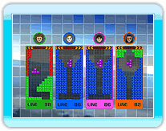

Jouez avec les règles de base de bataille Tetris.
Jouez contre un rival et/ou l'ordinateur en effaçant les lignes et en rendant vos adversaires incapables de jouer (GAME OVER) pour remporter la partie.
Le nombre de lignes effacées détermine le nombre de blocs de pénalité envoyés dans le champ des adversaires.

Les règles de base sont les
mêmes que pour "Ombre". Le gagnant est le joueur avec le plus haut pourcentage de complétion à la fin de la partie. Dans le cas où un
joueur réalise 100% de complétion, la partie s'arrête.
Les règles de base sont les mêmes que pour "Course". Vous remportez la partie si vous êtes le premier à atteindre l'arrivée ou si vos adversaires ne peuvent plus jouer.

Un jeu à 2 joueurs où l'on joue ensemble pour effacer
des lignes sur un champ deux fois plus grand (20 blocs de
largeur) qu'un champ normal.
Les tétrominos qui entrent
dans le champ diffèrent selon le joueur. Cependant, les règles sont les mêmes que pour Tetris de base. "Garder" est partagé entre J1 et J2.

Un jeu à 2 joueurs où l'on
s'affronte sur un champ deux fois plus grand (20 blocs de largeur) qu'un champ normal. Les règles diffèrent
de celles d'un Tetris de base. Les joueurs s'affrontent pour voir qui peut enclore le plus d'espace avec leurs tétrominos (ceux-ci comptant également comme espace).
À tour de rôle, les joueurs placent un tétromino. Le joueur dont le tétromino bouche en dernier un espace obtient cet espace. Le joueur avec le plus d'espace à la fin de partie est le gagnant.